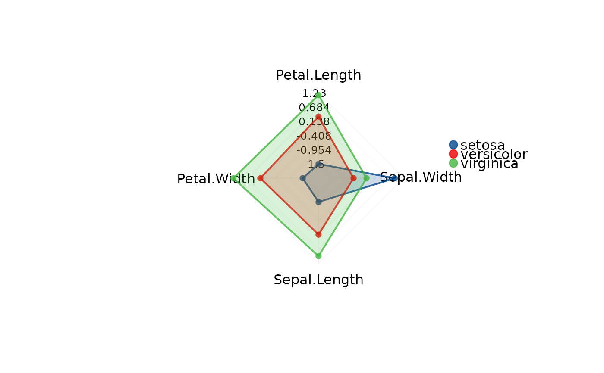
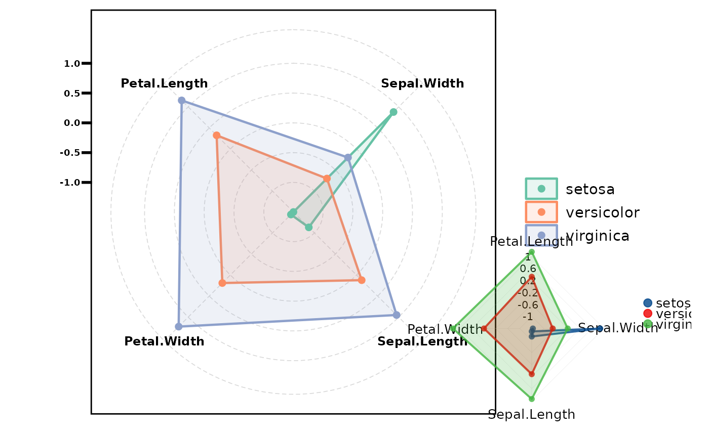
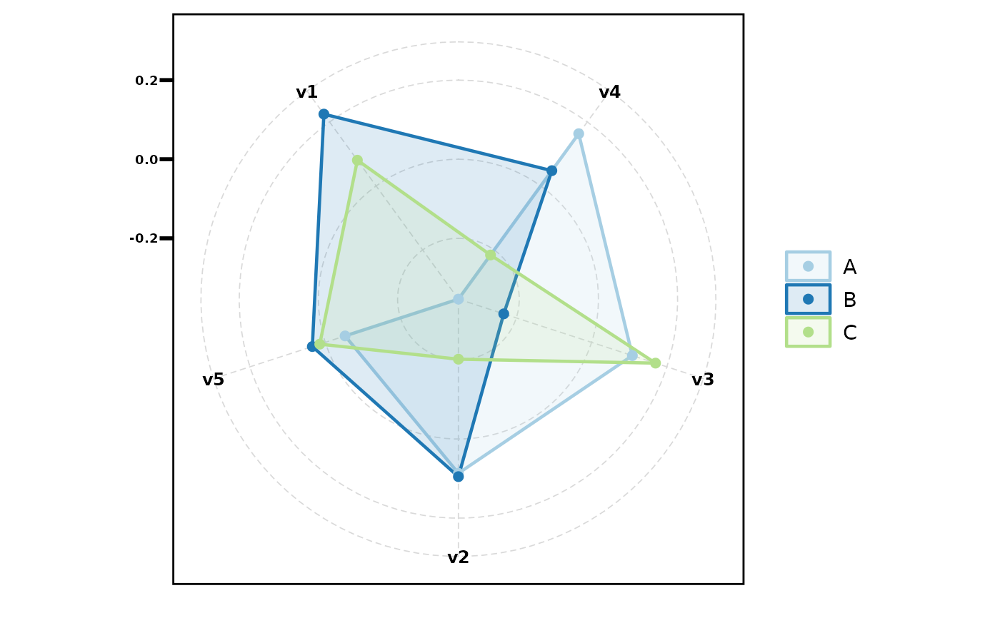

Visualise multivariate effect sizes (e.g. from stat_cohen()) as a
radar chart. Supports base R (fmsb) or ggplot (ggiraphExtra)
output modes.
Usage
plt_radar(
res,
ref_group = NULL,
palette = NULL,
output = c("base", "gg"),
facet = FALSE,
min_max = NULL,
n_breaks = 6
)Arguments
- res
Data frame from
stat_cohen(): first column isVariable, remaining columns are numeric values per group.- ref_group
Character, reference group for sorting variables. Default
NULLuses the first group column.- palette
Colour palette. Character vector or palette name. Default uses
pal_lancet.- output
Output mode:
"base"(default, uses fmsb) or"gg"(uses ggiraphExtra). The gg mode automatically facets by group.- facet
Logical, facet each group separately (base mode only). Default
FALSE.- min_max
Numeric vector
c(min, max)for axis limits. DefaultNULLauto-detects from data.- n_breaks
Integer, number of axis breaks. Default 6.
Value
For output = "gg", a ggplot object. For output = "base",
returns invisible(res) after printing.
See also
Other plot:
plt_cat(),
plt_cohen(),
plt_con(),
plt_dist(),
plt_sankey(),
plt_upset()
Examples
# Using iris Cohen's d
res <- stat_cohen(iris, "Species",
c("Sepal.Length","Sepal.Width","Petal.Length","Petal.Width"))
# Base radar chart
plt_radar(res)

# Base radar, faceted per group
plt_radar(res, facet = TRUE)
# ggplot radar: overlay (default, all groups on one chart)
plt_radar(res, output = "gg")
# ggplot radar: faceted (one panel per group)
plt_radar(res, output = "gg", facet = TRUE)
# ggplot radar with custom palette
plt_radar(res, output = "gg", palette = "Set2")
# Custom axis range (base mode)
plt_radar(res, min_max = c(-1, 1))

# Sort by specific group
plt_radar(res, ref_group = "versicolor")
# Simulated data
df <- data.frame(
group = factor(sample(c("A","B","C"), 120, TRUE)),
v1 = rnorm(120), v2 = rnorm(120), v3 = rnorm(120),
v4 = rnorm(120), v5 = rnorm(120)
)
res2 <- stat_cohen(df, "group", paste0("v", 1:5))
plt_radar(res2, output = "gg") # overlay
plt_radar(res2, output = "gg", facet = TRUE) # faceted
plt_radar(res2, output = "gg", palette = "Paired")
